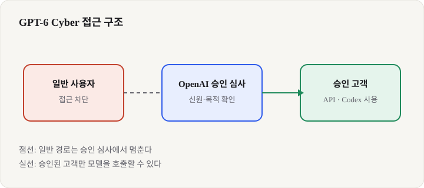
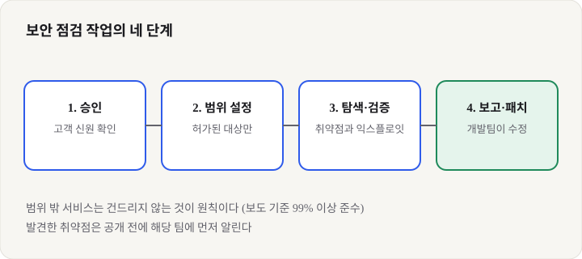

GPT-6 Cyber: 아무에게나 열지 않고 권한부터 나눠 주는 보안 AI 모델, 입문 개발자가 알아야 할 것
- OpenAI가 보안 취약점을 찾고 공격 코드의 동작을 검증하는 모델 GPT-6 Cyber를 2026년 11월 5일에 공개했다고 보도됐다.
- 일반 사용자에게 열지 않고, 승인받은 보안 기업 고객(Daybreak Red)에게만 API와 Codex로 먼저 연다. 범위를 벗어난 공격을 피하도록 훈련했다고 밝혔다.
- 강한 AI 모델은 성능만큼 "누구에게, 어떤 범위에서 여는가"가 중요해진다는 뜻이다. 입문 개발자는 이 구조를 미리 이해해 두면 좋다.
2026년 11월 5일, OpenAI는 보안 전문가를 위한 새 모델을 내놨다. 이름과 공개 범위를 두고 보도가 엇갈리지만, 공통된 내용은 분명하다. 이 모델은 누구나 쓰는 챗봇이 아니라, 취약점을 실제로 찾고 공격 코드가 통하는지 확인하는 일을 맡는다. 그래서 공개 자체보다 "누가 쓸 수 있느냐"가 더 큰 화제가 됐다.
01한눈에 보기
보안 점검을 생각해 보자. 건물의 빈틈을 찾는 일은 문을 잠그는 일과 한 쌍이다. 같은 열쇠가 집을 지키는 데도 쓰이고 빈집에 들어가는 데도 쓰일 수 있다. GPT-6 Cyber는 이 열쇠를 가진 AI에 가깝다. 빈틈을 찾고, 그 빈틈이 실제로 뚫리는지 확인하는 능력이 강해서 OpenAI는 열쇠를 모든 사람에게 나눠 주지 않고 출입증이 확인된 방문객에게만 주는 방식을 택했다고 보도됐다.

- 취약점: 프로그램이 의도와 다르게 동작해 남이 악용할 수 있는 틈.
- 익스플로잇: 취약점을 실제로 이용해 프로그램을 조작하는 코드. 취약점이 "진짜 뚫리는지" 확인하는 데 쓰인다.
- Codex: OpenAI의 코딩 에이전트 도구. 코드를 읽고 고치는 작업을 맡는다.
02어떻게 동작하나요
전체 흐름은 네 단계로 볼 수 있다. 먼저 OpenAI가 고객의 신원과 사용 목적을 확인해 승인한다. 다음으로 승인된 고객이 API나 Codex에서 모델을 호출한다. 이때 어디까지 공격해도 되는지 범위를 정하고, 모델은 그 범위 안에서 취약점을 찾아 공격 코드가 통하는지 검증한다. 마지막으로 발견한 취약점은 해당 소프트웨어 개발팀에 보고되고 패치로 이어진다. 보도에 따르면 Firefox에서 81개의 새 취약점이 나왔고, Mozilla가 이를 고치고 있다.

이 흐름에서 핵심은 "범위(rules of engagement)"다. 실제 보안 점검도 허가받은 시스템만 점검하는 규칙이 있다. The Register는 OpenAI가 이 모델을 "승인된 범위를 지키고, 연구자의 규칙을 따르도록" 훈련했다고 설명했다고 전했다. 기사에 따르면 범위 밖 서비스를 공격하지 않은 비율은 99% 이상이었지만, 나머지 0.07%의 사례에 무슨 일이 있었는지 OpenAI는 설명하지 않았다.
03왜 지금 화제인가요
성능 수치가 먼저 눈길을 끌었다. The Register에 따르면 훈련 중 평가한 ExploitGym에서 GPT-6 Cyber는 48.5%, 바로 앞 세대인 GPT-5.6 Cyber는 32.1%를 기록했다. 수치 자체보다 "보안 전문가만 쓰는 모델을 따로 공개하는 흐름"이 더 주목받았다. 한편 OpenAI는 버그 보상 프로그램도 같은 주에 손봤다. The Register는 ChatGPT, Codex, API Platform의 치명적 취약점 보상 상한을 6,500달러에서 3만 달러(보너스 포함 51,577달러)로 올렸다고 전했다.
04관련 나라·기업
| 구분 | 이름 | 어떤 관련이 있나 |
|---|---|---|
| 기업 | OpenAI | 모델을 만들고, 승인 고객 제도와 보상 프로그램을 운영한다. |
| 기업 | Mozilla | 보고된 Firefox 취약점을 고치는 대상. 보도에 따르면 수정 작업이 진행 중이다. |
| 기업·단체 | Debian | TechCrunch가 전한 우분투 관련 취약점 사례에서 보고와 패치가 이뤄진 곳. |
| 오픈소스 | Linux 커널 | 보고된 취약점과 패치 후보가 향하는 대상 코드. |
05기존 방식과 무엇이 다른가
| 비교 항목 | 일반 공개 모델 | GPT-6 Cyber |
|---|---|---|
| 공개 범위 | 가입하거나 API 키를 받으면 누구나 쓴다 | 승인받은 Daybreak Red 고객부터 API와 Codex로 연다 |
| 주된 용도 | 글쓰기, 코딩, 질의응답 | 취약점 탐색, 익스플로잇 검증, 모의 해킹, 레드팀 작업 |
| 안전 장치 | 일반 사용 정책 중심 | 승인된 범위 안에서만 작동하도록 훈련됐다고 밝힘 |
| 위험 평가 | 기사에 별도 언급 없음 | OpenAI의 준비 프레임워크에서 가장 높은 "Critical" 등급으로 분류됐다고 보도 |
입문 개발자에게 익숙한 공개 모델과 비교하면, 차이는 "능력"보다 "문"에 있다. 같은 모델이라도 누가 어떤 목적으로 쓰는지에 따라 허용 범위가 달라진다는 점이 새로운 방식이다.
06직접 해 보기
GPT-6 Cyber는 승인받은 고객만 쓸 수 있어서, 오늘 바로 호출해 볼 수 있는 공식 코드는 확인하지 못했다. 대신 입문 개발자가 할 수 있는 첫 걸음을 정리한다.
- OpenAI 공식 개발자 문서에서 사이버 보안 관련 안전 검사와 승인 제도(Trusted Access) 안내를 찾아 읽는다. 어떤 조건에서 누가 승인되는지 확인한다.
- 내 프로젝트의 입력 칸이나 외부에서 들어오는 데이터를 하나 고른다. 그 입력이 잘못되었을 때 어떤 일이 생길지 글로 적는다. 이것이 취약점 점검의 출발점이다.
- 직접 공격하지 말고, 허가받은 연습 환경(예: 보안 연습용 가상 서버)에서 "점검해도 되는 범위"를 먼저 문서로 정한다. 실제 서비스에는 절대 시험하지 않는다.
- 보안 점검 결과를 해당 소프트웨어 팀에 보고하는 방식(버그 신고 양식, 보안 정책 문서)을 읽어 둔다. 발견과 보고가 한 쌍이라는 점을 익힌다.
07주의할 점과 한계
- 이 글의 수치는 OpenAI 공식 발표 글을 열지 못해, 두 매체 기사에 기대어 적었다. 공식 글을 확인하기 전까지는 "보도에 따르면"으로 읽는 것이 맞다.
- 모델 이름이 기사마다 다르다. The Register는 "GPT-6 Cyber"로, TechCrunch는 "ChatGPT Cyber"와 "GPT 5.6 Sol" 관련 내용으로 표현했다.
- Linux 커널 관련 948이라는 숫자의 의미도 두 매체가 다르게 설명한다. 확인된 취약점인지, 잠재적 문제인지 구분해서 읽어야 한다.
- 가격, API 요금, 벤치마크 세부 조건은 기사에서 확인하지 못했다. 나머지 0.07%의 범위 밖 사례도 OpenAI가 설명을 거부했다.
- TechCrunch는 공개 범위가 충분한지 질문을 던졌고, 한 비평가는 앞선 모델 Daybreak Blue가 "약화됐다"고 지적했다. 안전 장치의 효과는 아직 독립적으로 검증되지 않았다.
08정리
GPT-6 Cyber가 보여 준 방향은 분명하다. 강한 AI 모델은 공개 여부보다 "어떤 목적에, 누구에게, 어떤 범위로 여는가"가 더 중요한 판단 기준이 되고 있다. 보안 분야처럼 잘못 쓰면 피해가 큰 기술일수록 이 구조가 먼저 나온다.
입문 개발자에게 주는 메시지는 두 가지다. 하나는 AI 도구를 쓸 때 그 도구가 어떤 권한과 범위를 가지는지 항상 확인하는 습관이다. 다른 하나는 내가 만든 프로그램의 입력과 권한을 점검하는 기본기다. 강력한 모델이 나와도 이 기본은 여전히 내 몫이다. 공식 발표가 확인되면 이 글의 수치도 다시 점검할 계획이다.
09참고한 글
- OpenAI releases GPT-6 Cyber, and promises this one stays within 'rules of engagement' The Register · 2026.11.05
- OpenAI released a new cybersecurity model. Is that enough? TechCrunch · 2026.11.05